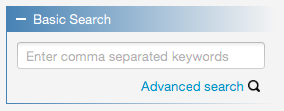
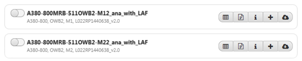

Basic search requires only comma separated keywords as inputs. This search will match all/any(2) keywords against
spectrum name, A/C program, A/C section, fatigue mission or ANA file comments. Matching spectra will be listed in
the Downloads View which is explained later in this section.

Click on Advanced search in case you require more detailed search criteria.
Advanced search panel provides entries for more specific search criterion such as spectrum name, A/C program,
A/C section, fatigue mission, fatigue mission issue, FLP issue, IFLP issue, CDF issue, ANA file comments and spectrum generation
date. None of these are obligatory, but at least one should be supplied. Match-operator shall also be selected for each given
criteria (see following figure).
By default, a search can produce maximum 100 results (i.e. spectrum entries). This can be increased on demand. Logical operator
determines how different criterion will be combined to create a search query. For instance, say "A310" is entered as A/C program and "MR"
is given as fatigue mission criteria. Using AND operator would return spectra satisfying both A310 A/C program and MR mission. Whereas, OR
would return all spectra having at least one of them. Finally, ignore case option determines whether the character based search criteria
shall be matched with or without taking word-cases into consideration.
Search results are listed from within the Downloads View as seen in the following figure. Each item is shown with its spectrum name (as header),
A/C program, A/C section, fatigue mission and delivery reference. Click on the info button (shown with "i" icon) to see detailed information about the spectrum.

Click on Download (shown with the cloud-down-arrow icon) to download a full copy of the spectrum to your disk. This copy will include spectrum files such as ANA,
TXT, CVT, FLS and Conversion Table files.
To download multiple spectra, first select the spectra from their toggle-switches and click Download at the top of the downloads view.
Selected files will be downloaded one by one into the selected directory.
Click on Add (shown with "+" icon) to add the spectrum into your local Equinox database. You can also add multiple spectra, via selecting the spectra from their
toggle-switches and clicking on the add button at the top of the downloads view.
Click on Pilot Points (shown with "P" icon) to search the database for connected pilot points. You can then see detailed information about each connected pilot point,
and download or add them to your database.
Click on Loadcase Factors Files (shown with a table icon) to search the database for connected loadcase factor files. You can then see detailed information about each
connected loadcase factor file, and download or add them to your database.
Notes: (1) You must be connected to the database server in order to perform these operations.
In case you experience connection problems, please refer to .
(2) Logical operator (AND/OR) can be selected from within the Options panel. By
default it is AND operator.